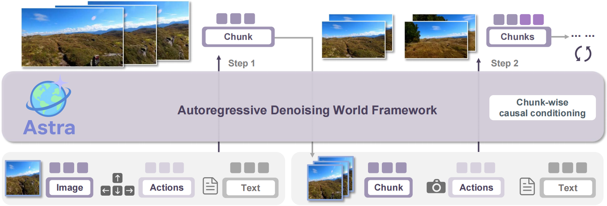
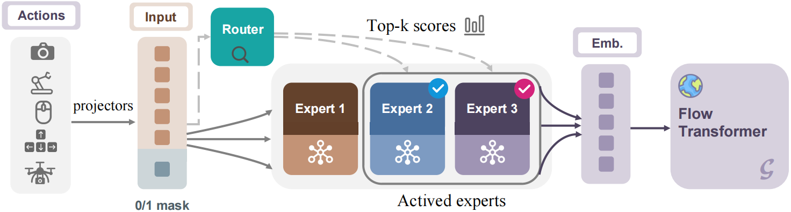
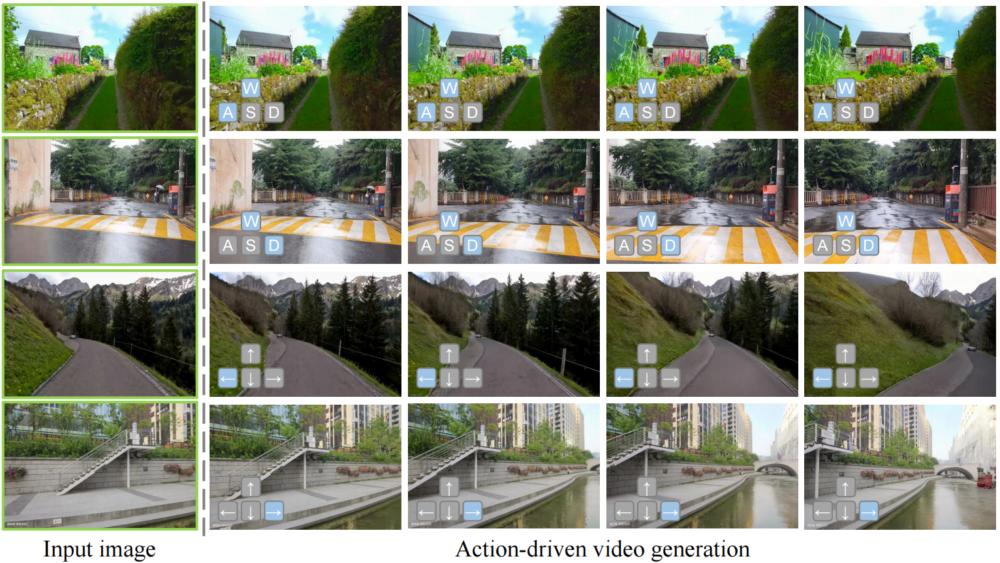
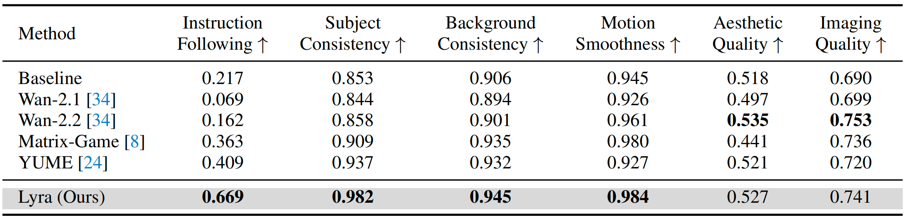
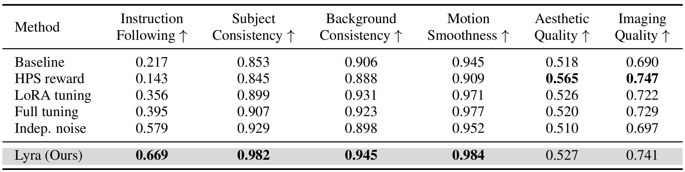

Abstract
Recent advances in diffusion transformers have empowered video generation models to generate high-quality video clips from texts or images. However, world models with the ability to predict long-horizon futures from past observations and actions remain underexplored, especially for general-purpose scenarios and various forms of actions. To bridge this gap, we introduce Astra, an interactive general world model that generates real-world futures for diverse scenarios (e.g., autonomous driving, robot grasping) with precise action interactions (e.g., camera motion, robot action). We propose an autoregressive denoising architecture and use temporal causal attention to aggregate past observations and support streaming outputs. We use a noise-augmented history memory to avoid over-reliance on past frames to balance responsiveness with temporal coherence. For precise action control, we introduce an action-aware adapter that directly injects action signals into the denoising process. We further develop a mixture of action experts that dynamically route heterogeneous action modalities, enhancing versatility across diverse real-world tasks such as exploration, manipulation, and camera control. Astra achieves interactive, consistent, and general long-term video prediction and supports various forms of interactions. Experiments across multiple datasets demonstrate the improvements of Astra in fidelity, long-range prediction, and action alignment over existing state-of-the-art world models.
Pipeline
Overview of the proposed Astra. Our autoregressive denoising world model generates
future video chunk by chunk from an initial image, actions, and optional prompts. Chunk-wise
causal conditioning enforces temporal coherence and faithful action response.
Autoregressive Rollout Diagram

Astra generates future video chunk by chunk from an initial image, actions, and optional prompts. Chunk-wise
causal conditioning enforces temporal coherence and faithful action response.
Mixture of Action Experts

Mixture of Action Experts (MoAE). Action signals from diverse modalities are projected
into a shared space, augmented with a history mask, and routed to modality-specialized experts. A
dynamic router selects top-k experts, whose outputs are aggregated into unified embeddings and fed
into the Flow Transformer, enabling versatile and precise action-conditioned generation.
Experiments
Action-driving video generation
Qualitative comparisons

Quantitative comparisons
Analysis
Ablation studies
Autonomous driving
Astra enables arbitrary motion trajectories within the same scene. For this intersection, we generate both a left-turn and a right-turn sequence.
More applications
Our framework handles diverse scenarios: (a) autonomous driving, predicting long-horizon traffic dynamics from control inputs; (b) manipulation, conditioning robot actions on object interactions; and (c) camera control, reflecting viewpoint changes in coherent videos. These demonstrate Astra's versatility for interactive world modeling.
Out-of-domain scenarios
Astra generalizes to scenes not seen during training, including indoor environments, Minecraft worlds, and animation-style scenes, producing coherent futures that follow camera or navigation commands
Parameter analysis
Astra introduces the smallest parameter overhead among all methods, adding only lightweight adapters while preserving the efficiency of the frozen backbone.
Datasets
Datasets used in experiments, along with their actions and sample sizes. For each dataset, we list the action type, followed by the dimensionality of its representation.
Effect of visual inertia
As the history length increases, video quality improves, but the action-following score drops sharply, illustrating the visual inertia phenomenon. This motivates our designs in Astra.
Future Works
Astra's future work includes releasing full inference pipelines for additional scenarios such as autonomous driving and robotic manipulation, open-sourcing our data processing utilities and training code for broader reproducibility, and developing a higher-resolution version of Astra by integrating more advanced generative backbones such as Wan 2.2.
BibTeX
@inproceedings{zhu2025astra,
title={Astra: General Interactive World Model with Autoregressive Denoising},
author={Zhu, Yixuan and Feng, Jiaqi and Zheng, Wenzhao and Gao, Yuan and Tao, Xin and Wan, Pengfei and Zhou, Jie and Lu, Jiwen},
booktitle={arxiv},
year={2025}
}